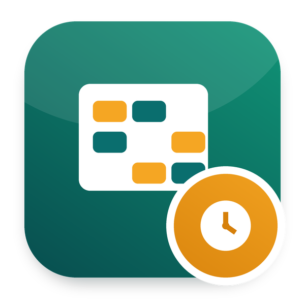

Shifts
Plan shifts on a roster board, from shift templates or rotations
Roster boardRotationsOpen shiftsShift swaps
Part of Odoo Mates HR · Odoo 20 Community and Enterprise
Plan on the roster board
Click a shift template onto the days, drag shifts, copy the week before
Warned before you publish
Time off, unavailability, too little rest, too many hours in a week
Claim, swap, tell your days off
Employees claim open shifts, swap with colleagues, tell the days they cannot work
FeaturesWhat it does
- ✓ Shift templates (Shifts > Configuration > Shift Templates): a kind of shift with its hours, an unpaid break, a short name shown on the roster (e.g.
M for Morning) and a color. A shift ending at or before its start ends the next day, e.g. a night shift 22:00-06:00. Optional: the departments and job positions working it, the time type of its work entries (e.g. night work paid at its own rate) and an allowance per shift, paid with *Shift Allowances in Payroll*. Morning, Evening and Night templates are provided. - ✓ Rotations (Shifts > Configuration > Rotations): a cycle of shifts and days off, e.g. *2 Mornings, 2 Nights, 2 Off* (provided). Shifts > Apply a Rotation lays it over a period for some employees, each employee one day further in the cycle when staggered, the days already planned kept if you wish.
- ✓ Roster board (Shifts > Roster): the employees down the side, the days across, by week or two weeks, filtered by department. Pick a shift template, then click the days to plan it; drag a shift to another employee or day; copy the shifts of the period before; publish the draft shifts of the period. The top row holds the open shifts. The cells show the time off and the unavailability of the employees.
- ✓ Checks before publishing: time off or a public holiday, unavailability, overlapping shifts, less rest between two shifts than the minimum, more hours in a week (Monday to Sunday) than the maximum, a shift before the employee is rostered. The planner sees the warnings and publishes anyway with a reason, kept on each shift.
- ✓ Published shifts are the working schedule: on its first published shift, an employee is rostered: a new version of the contract from that day, on a working schedule of their own, the days before keeping their schedule. Each published shift is written on it as dated lines. Changed or sent back to draft, the schedule follows. The employees are notified of their published, changed and cancelled shifts.
- ✓ Rostering (button on the employee form): start rostering an employee from a date, or stop it and go back to a fixed working schedule; the shifts from that date on are then removed.
- ✓ Open shifts: a shift with no employee. Employees see the upcoming ones in My HR > Open Shifts and claim one from My HR > My Shift Requests, if the department and the job positions of the shift fit.
- ✓ Shift swaps: an employee offers a shift of theirs for a published shift of a colleague; the colleague accepts or declines, then the request goes along the approval flow (the manager by default). Approved, the shifts change hands. Planners follow all requests in Shifts > Shift Requests.
- ✓ Unavailability: the employees tell the days they cannot work (My HR > My Unavailability); the planners see them in Shifts > Unavailability and on the roster.
- ✓ Employees see their published shifts in My HR > My Shifts.
- ✓ Shifts list, calendar and pivot views, with filters on open, draft, published and upcoming shifts.
SetupConfiguration
- ✓ Access rights, application *Shifts*: Planner plans and publishes the shifts (the HR officers are planners too); Administrator also sets the shift templates and the rotations.
- ✓ Employees > Configuration > Settings > Shifts: the minimum rest between two shifts (11 hours by default) and the maximum hours per week (48 by default), per company; 0 turns the check off.
- ✓ Employees > Configuration > Requests > Approval Flows > *Shift Requests*: the steps approving the claims and the swaps, one Manager step by default.
UseHow it works
- 1. Set the shift templates and, if you work in cycles, the rotations.
- 2. Open Shifts > Roster, pick a template and click the days of the employees, or apply a rotation.
- 3. Check the warnings, then click *Publish*: the employees are notified and their working schedule follows the shifts.
- 4. Leave a shift without an employee to offer it as an open shift.
EditionsCommunity and Enterprise
Works with Odoo 20 Community and Odoo 20 Enterprise. On Enterprise, it cannot be installed together with the Enterprise Approvals app: both define the same records. Use one or the other.
InstallDependencies
hr_work_entry, om_hr_base, om_hr_approval.
Odoo Mates HR
The HR suite of Odoo Mates for Odoo 20: every module installs on its own, the links between them are bridges.
Support: odoomates@gmail.com